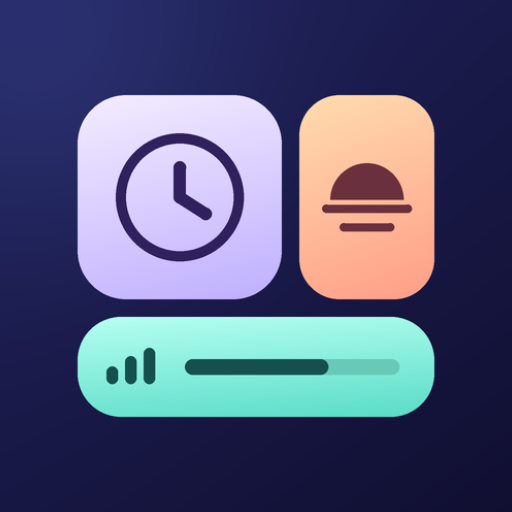

Stored on your device
Widget content is kept in app storage. Android backup may also apply.

Phone WidgetsA home screen that feels like you. A clear explanation of the data that makes it work.
Privacy Policy · Effective November 17, 2026 · Last updated November 17, 2026
Widget content is kept in app storage. Android backup may also apply.
Choose access for the widgets you use. Revoke it in system settings.
The current app has no advertising, analytics or crash-reporting SDKs.
This policy covers Phone Widgets for Android, provided by Faisal ur Rehman / TenDegree (“we”, “us”). It describes the current app’s handling of personal information and this policy page.
No account is required. We do not operate an app backend that collects your widget content. We do not sell personal information or use your health, calendar, app usage or media data for advertising or profiling.
Permissions are requested when you choose a feature that needs them. Denying access may limit that feature; widgets without that requirement remain available.
If you grant Health Connect access, Phone Widgets reads step counts to show daily totals, goals and weekly history. Optional background health-data access allows these widgets to refresh while the app is closed. Where available, the phone’s step sensor can be used instead.
The app stores daily step totals locally for history and cached display. It does not write to Health Connect or upload your step data to us or third-party services. Cached totals may be included in Android system backups, as explained below. Health data is not sold, used for ads, credit decisions, insurance, or purposes unrelated to the step features you choose.
You can revoke step and background access through Health Connect or Android settings. Revoking access stops further authorized reads but does not erase previously cached app data. Clear app storage to remove those local copies. Manage the original records separately in Health Connect or the app that created them.
Step widgets are for general wellness and information. They are not medical tools.
This page: the policy is hosted on GitHub Pages. GitHub may process technical request information to serve and protect the site under the GitHub Privacy Statement. This page includes no analytics scripts, advertising, tracking cookies or external font requests; its fonts and images are hosted with the page.
Settings, widget configurations, imported photos, cached weather and daily step history are stored in the app’s private files and databases. Some caches and history can remain after a widget is removed or a permission is revoked; the app does not promise a fixed automatic deletion period for every record.
Android backup is enabled. Depending on your Android version, device and backup settings, app data may be copied to your system backup provider or transferred to another device. Those copies are governed by your provider’s settings and policies. We do not operate that backup service.
To remove all local app data, open Android Settings → Apps → Phone Widgets → Storage → Clear storage / Clear data, or uninstall without retaining app data. This resets your app content and widget configuration. Removing a photo from a widget does not delete its original from your gallery.
Clearing app storage does not delete original calendar events, Health Connect records, or provider-managed backups. Manage those separately in the relevant service. A backup may restore app data if you reinstall. For support emails, contact us to request deletion of information you sent; we may retain information where required by law.
Android’s app sandbox helps protect local data, and OpenWeather connections use HTTPS. No storage or transmission method can be guaranteed completely secure. Remember that widget contents are visible on your home screen to anyone who can view it, and are rendered by your launcher.
Depending on your location, you may have rights to access, correct or delete personal information, restrict or object to processing, or complain to a data protection authority. Contact us about information you have provided to us. We cannot remotely retrieve or erase widget content held only on your device.
Phone Widgets is a general-purpose customization app and is not specifically directed at children under 13. We do not knowingly collect children’s personal information through an app backend. If you believe a child has sent us personal information, contact us so we can address it and delete it where appropriate.
Questions about privacy or information you have sent us? Contact Faisal ur Rehman / TenDegree and include “Phone Widgets Privacy” in the subject.
tendegree.dev@gmail.com ↗We may update this policy as the app changes. The date at the top shows the latest revision. Material changes will be reflected in this page and, where appropriate, in the app.